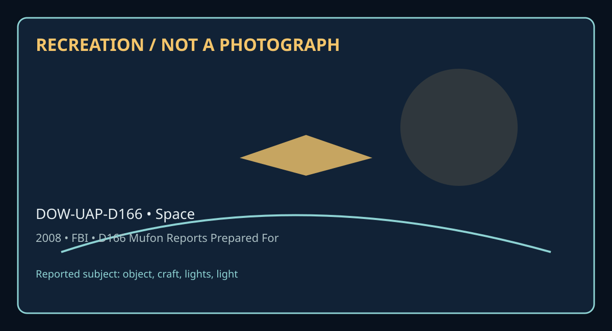

Release 07 / archival case file / DOW-UAP-D166
D166 Mufon Reports Prepared For Baass November 2008
This d166 mufon reports prepared for places a object, craft, lights, light thread in a 2008 Space record.
ID: DOW-UAP-D166
Filename:
DOW-UAP-D166-MUFON-Reports_Prepared_for_BAASS-November_2008.pdfDate marker: 2008
Location: Space
Agency or collection signal: FBI
Pages read: 26

RECREATION / NOT A PHOTOGRAPH. The diagram is an interpretive editorial aid, not source imagery.
What this document says
The opening page's extracted text begins: “MUFON Reports Prepared for BAASS November 2008 Coples”
Across the 26 pages, the recurring terms are object, craft, lights, light. Those details belong to this file, not to a generic case template. Page-level reading follows:
- Page 1: MUFON Reports Prepared for BAASS November 2008 Coples
- Page 2: ------------, J/\UF~ -; Mutual UFO Network Lift MUFON Advanced Technology Establishment Newport Beach, California ABSTRACT Lift is defined as the force or forces that permit a vehicle to hover or remain at constant altitude in flight, without expelling fluids as with a jet engine or rocket, which would be the subject of propulsion. We examine live ways that
- Page 3: always makes a lot of noise. The extensive reports of hovering craft of varied shapes and sizes stronaiy suggest that they are using technologies beyond our CUJTeOt skills. One would think it not unreasonable that the propulsion systems that got them here would also pcm1it them to hover easily, U especially ifthey involve gravity con1rol B. The possibility o
- Page 4: since the earth,s magnetic field only goes down 100/4 at 100 miles altitude. Sec Appendix A for more detailed design parameters. Vravtty Coatrol Tedanolegles It is evident to most who study the UFO reports that the observed accelerations and the implied velocities ftom other star s}'Slmls would clearly imply an ability to .interact with both gravity and the
- Page 5: Gravity Coatrol with Supercoaductor Research One ofthe milestones in this research would be to demonstrate 107 amps/cm.2". U ppendh A- Hovering in the Earth,, Magnetic Field A toroidal or doughnut shape containing a cummt will produce a mqnetic moment M, determined by the strm.gtb. ofthe circulating current i shown in llide 1. Ifit rests in an external magne
- Page 6: 1 Magnetic field for a dipole Magnetic dipole I CIMUh1 1 ,,•106....,,,___ _ _ .u,__i..__J .i ,:: 1:l ,:' .f ,..- ,r Ot'l "A\Cf Utl\Htt.rttr ,1; lc,O! I 'i ,... l Variation with latitude Earth force on magnetic dipole ' Miti°M IfOnl - l,.,,._.MtlWll(ow«.Ae Uh -..:r,u,,.. I er 1•~ ··1.1t , 1;·u,,_s,_ _,., I IOIIC! ~ "" O' <I'S U! WIM 3 Moment, field, size rela
- Page 7: -----------J 1 J1\U_ Mutual UFO Network ~ POWER GENERATION MUFON Advanced Technology Establishment Newport Beach, California ABSTRACT This proposal suggests the purchase and subsequent use of an already-designed research facility to develop the principles of cold fusion to permit a breakthrough in the planning of full-scale development for low temperature n
- Page 8: atomic mixtures of deuterium and palladium wort best; (c) it is more productive at higher tcmpcralU.reS; (cl) there are unknown triggering effects to get the rcaetiom started; (e) the ddHc reaction noted above is 1he main source of enetgy; (t) ,ometimes neutron emission is obsei\led; (g) calorimettic studies have left no doubt that U ,eo excess energy J'C3Ul
- Page 9: Referring to Figure 1, ~ 43(a)(2) ! allowed bis electrolytic cells to increase in temperature from 200C to 95°C, the power ~ ty increases from about l W/cc{Pd) to about 100 W/oc(Pd). This is a remarkable increase in power density for just a 75°C increase in temperature. 184~) . While! • Imolten salt experiments WCl'C very difficult to :replicate, he measured
- Page 10: b ~TCP lqullbr1um Dlagnlm ~IIN:aWJrl I :Ali.ad[)ltdIIDlnlclll1lal for • • a1a1g1cft1 ,...........MAM•._ Rgure4 eeaa••-- - IWIIMDalallllllo tcpq,c,c, lpocplO ,ocp,oj ,.., • ... ,eo I 10 • I ' • ' u 0.1 U1 ~ NolB: (1) lhelUlllatlld dal 11111"Jl111t lhe._,.C01_,..., lorarullblrd Pd ... CZ)Thlp&,Wal._,_.,_....,.. 2 danJ-1,,)Cf lltl'Dpioclalhlldltll- Flpre 2. U d
- Page 11: had enough funding to perform any experiments yeL It will pennit the evaluation of reaction rates as a function of tempera~ concentra1ion and pressure for gaseous deuterium forced into solid palladium. A great deal of thought and detailed design work has gone into making this a quality unit. The experimental program would tu:rall ay high attention to the saf
- Page 12: The EDTEK Scanning Reactor is ideally suited t.o this kind ofactivity because its unique cbign allows for quick tumaro1B1d for. the next test The reactor JftSSUfC vessel is inexpensive and can be replaced in short order in the event ofa 'melt-down'. The unique design ofthe scanning react.or makes it practical to modify it U ':' installation of electric feed-
- Page 13: 1843(a)(2) , I / - !would be happy to assist in some planning pert time.!1843(a)(2) !ofSRI at Menlo Park, Califomia is reported to be enthusiastic in using such a test facility to more accundcly assess the conditions that cause the deuterium atoms to fute. The te.,ting should be done by personnel who have knowledge of the field and the I •jilts to deal with
- Page 14: Mutual UFO Network j :... ~ Control MUFON Advanced Technology Establishment Fort Collins, Colorado ABSTRACT Tmditiono.l aircraft controls have been perfected over the long history of powered flight. evolving from mechanical hydraulic controls to fly-by-wire computer controls. Today's most sophisticated commercial and military aircraft are almost exclusively
- Page 15: u Consider the control system that could be used to control a Superconducting Toroid craft: u The proposed Toroid craft is comprised of an inner ring and an outer ring. The inner ring contains the occupant compartment, power generation system compartment, controls compartment and navigational system. The inner ring would consist ofmultiple sections ofsuperco
- Page 16: System 2 would control the saturation of the superconductivity in the outer ring and control u speed and direction ofthe craft. System 3 would oomrteract the magne1ic efl'ects between multiple ~ . System 4 would prohibit the vehicle from e,rNWfing G-fmce., which could be bannful to human OQCUpants. System. S would be a fail-safe system to potcct the aaft, in
- Page 17: HUMAN INTERFACE MUFON Advanced Technology Establishment Delafield, Wisconsin ABSTRACT The human mind is a remarkable instrument that may be used in the future to control various functions, including flight. The scientific study of implants found in human beings may lead to technologies which could lead to this giant leap. Unlimited possibilities for payoff e
- Page 18: 8. Utilmng the electrical activity in the brain via externally mounted sensors. u Referred to as synthetic telepathy, this technology utilius electrodes in contact with the human scalp. F.missions from the tnin "are passed through an amplifier, which sends the results to a computer for processing.,-2 Research in this area is ongoing bodJ. for military ptapol
- Page 19: The University of Copenhagen has been conducting studies, including one in which they focused a magnetic beam at the back ofthe subject's bead. The beam affected the visual cortex and caused temporary blindness on a consdous level. The studies also indicaled, however, that the individuals were able to react to certain directions on an unconscious level - as
- Page 20: UFO literature reports that some implants exhibit magnetic properti,es and emit a u u u ~ without any.~ exte.mal excitation. Upon removal, they become non magneti~ cease transmitting and start to degrade. It is hypotbesi:zed 1hat they derive the power to nm from biochemical means. While it is known that RFID tags are already in military and public use, the
- Page 21: U Four to Six Months- Volunteers recruited. One Month - Cases selected. AcommiUee would review and select cases for the project Twelve to F.ighteen Months - Data collected. This phase would include the actual removal, t1uarination, disa89f!IDbly and data collection relative to the implants. One Month - Data reviewed and summarized. In this phase, data collec
- Page 22: PROPULSION MUFON Advanced Technology Establishment Austin,Texas ABSTRACT Chemical based propulsion ofspace vehicles allows for the e,cploration ofour solar system but is not feasible for in1erste11ar travel. A solution to this must come in either the ability to travel near the speed oflight or by changing the dynamics oftravel through some type ofwarping of
- Page 23: 1. Ability for rapid acceleration, deeeleration, and hovering capabilities. 2. Ability for sudden changes in direction. 3. V chicle shapes vary and are often not aerodynamic. 4. Objeds over 400 metas in size capable ofhovering and/or moving slowly. S. No visible rocket nozzles or propulsion systan. 6. There is a Jack ofair dispJacemeut causingturbulence with
- Page 24: u Literature that supports the development ofanti-gravity techniques was first mcmioned in 1he t960s. The Oer18enshtein Effect was postuilded as a wave resonance solution to Einstein's gmoral ldativity field cquatioo. It predicts an emitted gm,itatiooel waw due to an electrnma~ wave propagating 1843 a 2 1843(a)(2) a ~••IJ"w' an through a static ·c field. Thi
- Page 25: (5.) (Mataial Scientist) Expertise in state of the art nanotechnology may be of value to this U team. Some of the initial cxperimeDtal work might be developed at a sulrmicron level since quantum effects are easier to detect at Chis level. Whether a nano-technology expert is needed OD the team may depend OD the route that the team takes to evaluate anti grav
- Page 26: 1843(a)(2) u u u PagcSofS BAAS8 CONl'IDENTIAL Nov..()8
Historical context and disclosure schema
Read in context, this record belongs to the 2008 information environment: FBI paperwork, a Space setting, and the reporting conventions visible in the source. Its broader disclosure value is procedural as well as anecdotal: it shows how an observation, material question, investigation, or analytical program was routed, described, and preserved. That makes it comparable to other Release 07 records without collapsing unlike evidence into one event.
Evidence limits
The source establishes that this document exists and records what its authors or quoted witnesses wrote. It does not, by itself, prove the identity, performance, origin, or physical reality of the reported subject. Extraction preserves wording but cannot restore missing attachments, authenticate provenance, or independently validate testimony. Interpretations beyond the page-specific record remain hypotheses.
Source: supplied PDF in research/tranche-07. This article is a research aid, not a claim that the reported object was non-human.